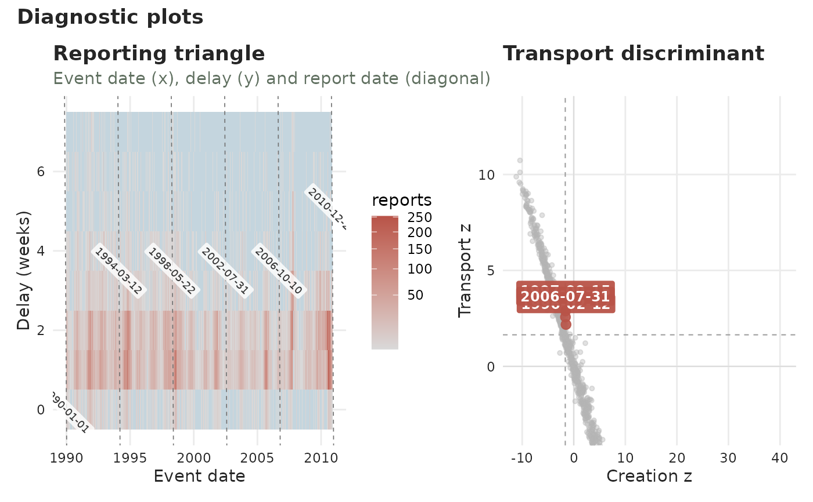

Diagnostic plots of the reporting process
diagnostic_plot.Rd![[Experimental]](figures/lifecycle-experimental.svg)
Lays out a gallery of complementary views of a tbl_now's reporting process,
all aimed at spotting reporting artefacts – especially batch reporting. Each
view is also available on its own (see See also); diagnostic_plot() picks
the ones named in panels and combines them with patchwork. Selecting a
single panel returns it as a plain plot. Every view is facetted by stratum when
the tbl_now declares strata.
Arguments
- x
A
tbl_now()object.- panels
Which panels,
"all"(default) or any subset of"reporting","triangle","profiles","delay_drift"and"transport".- by
For the
"profiles"panel, one mark per"report"date (default) or per"event"date.- max_delay
Largest delay on the delay-based panels.
NULL(default) caps at the delay covering 99% of reported mass.- ...
Batch controls (
lookback,period,alpha) routed to the"transport"panel.- plotly
If
TRUE, return an interactive plotly widget (the panels stacked) instead of a static patchwork. DefaultFALSE.- axis
Which time axis the delay is measured to:
"report"(default) or"validation". Both are measured from the event, so the two are directly comparable – run each in turn and the gap between them is the time the laboratory adds. (This is not the same quantity as the.validation_delaycolumn, which is the laboratory's own turnaround, measured from the report.) Needs a validation process (seeadd_validation_date()); cases still"pending"are left out.- palette
A named colour palette. Defaults to the package palette.
Value
A patchwork object, or a single plot when one panel is selected
(or a plotly widget when plotly = TRUE).
See also
Every panel is also a function of its own:
plot_reporting_process() and
plot_epidemic_process() (when reports arrived, versus when cases happened),
plot_reporting_triangle() (the full event-by-delay grid),
plot_delay_profiles() (each date's delay curve),
plot_delay_drift() (whether delays are getting longer),
plot_transport_discriminant(), plot_scalogram().
Examples
data(denguedat)
dn <- tbl_now(denguedat, onset_week, report_week, verbose = FALSE)
diagnostic_plot(dn, panels = c("triangle", "transport"))
#> Warning: ! `transport_discriminant()` is experimental: results are not guaranteed and
#> the interface may change.
#> ℹ Treat a flagged report date as a potential batch, not a confirmed one.
#> This warning is displayed once every 8 hours.
